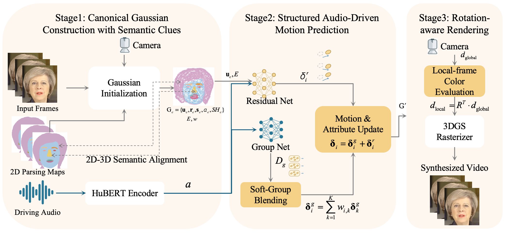
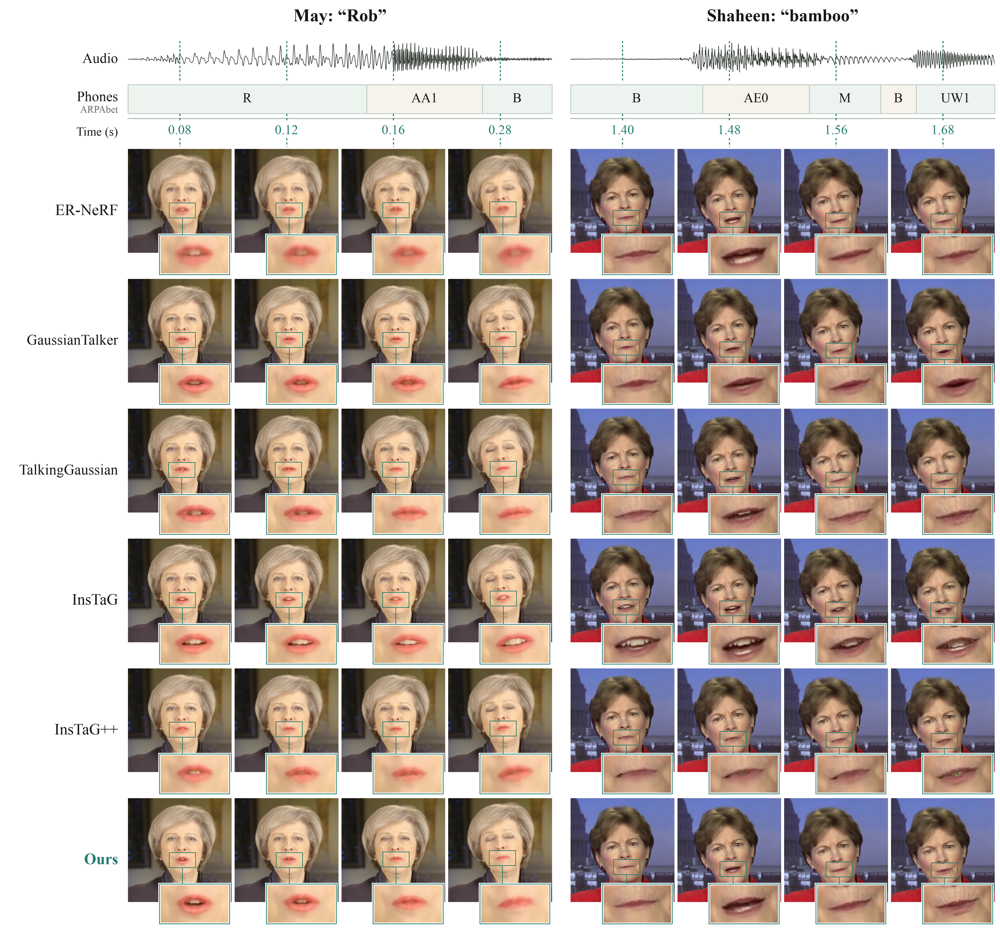

Semantic motion groups
External face parsing initializes soft assignments to facial regions. Reconstruction and semantic supervision refine which Gaussians should share motion.
AUDIO-DRIVEN 3D GAUSSIAN AVATARS
1 Peking University2 Pengcheng Laboratory
Shared motion for regional coordination.
Local refinement for detailed articulation.

Audio-driven talking head models reconstruct appearance well but struggle with lip synchronization under unseen speech. Short training videos provide limited audio-motion coverage, while image supervision does not explicitly specify which Gaussians should share motion. FLAME-based approaches provide structure through mesh binding, but their audio-driven animation depends on the accuracy of intermediate facial-motion predictions. We propose a coarse-to-fine Gaussian motion representation with semantic initialization that directly incorporates motion sharing. Shared group motion encourages regional coordination, while per-Gaussian residuals preserve local articulation. External face parsing initializes soft group assignments, which are refined during early joint training with reconstruction and semantic supervision. These assignments organize shared motion while preserving differences among the lips, teeth, and mouth interior. Across four identities, our method achieves the best synchronization performance among the compared methods on two datasets. These gains on unseen audio are achieved while maintaining competitive self-reconstruction quality.
External face parsing initializes soft assignments to facial regions. Reconstruction and semantic supervision refine which Gaussians should share motion.
Audio-conditioned group codes predict shared deformation. Each Gaussian blends the codes using its learned soft group weights.
Per-Gaussian residuals capture local differences in motion. The combined codes update Gaussian geometry and attributes before rendering.
EXPERIMENTS
Evaluation across May, Lieu, Obama, and Shaheen, with unseen driving audio from CP-benchmark and THQA.
vs. 8.840 for the best baseline
vs. 9.529 for the best baseline
Competitive reconstruction quality
Best values in bold. ↓ lower is better; ↑ higher is better.
| Method | Self-reconstruction | CP-benchmark | THQA | ||||
|---|---|---|---|---|---|---|---|
| PSNR ↑ | Sync-D ↓ | Sync-C ↑ | Sync-D ↓ | Sync-C ↑ | Sync-D ↓ | Sync-C ↑ | |
| ER-NeRF | 28.406 | 8.802 | 6.118 | 9.722 | 4.992 | 9.736 | 3.550 |
| TalkingGaussian | 32.495 | 8.112 | 6.918 | 8.840 | 5.660 | 9.529 | 3.655 |
| GaussianTalker | 32.802 | 8.643 | 6.761 | 9.440 | 5.662 | 9.891 | 3.807 |
| InsTaG | 30.255 | 11.075 | 3.575 | 10.880 | 3.524 | 10.706 | 2.422 |
| InsTaG++ | 32.333 | 9.314 | 5.386 | 9.524 | 4.903 | 9.748 | 3.245 |
| SemGroupTalker (Ours) | 32.350 | 7.643 | 7.562 | 8.426 | 6.324 | 9.223 | 4.147 |
Metrics are averaged equally across four identities. InsTaG follows its original setting; InsTaG++ uses the full target-identity training data. Self-reconstruction is evaluated with paired reference frames; CP-benchmark and THQA provide unseen driving audio without paired visual ground truth.
LOOK CLOSER
The same unseen speech drives each method. Compare the mouth motion through the words “Rob” and “bamboo”.
